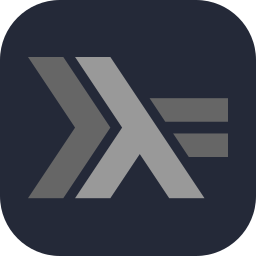
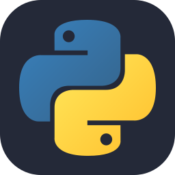
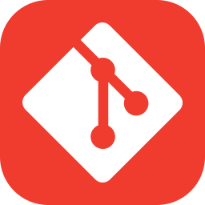

SNecc Bar
Plataforma full-stack para gestão de compras, stock e histórico de transações.

Computer Science undergraduate
Licenciatura em Ciências da Computação na Universidade do Minho. Experiência em projetos web, bases de dados, ferramentas Linux e coordenação técnica no NECC.
Ver CV completo





Plataforma full-stack para gestão de compras, stock e histórico de transações.
Coordenação técnica, arquitetura e acompanhamento de projetos internos do NECC.